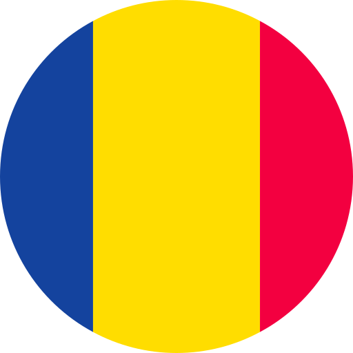

Cross-platform Developer
Hello! My name is Thomas Dragutan a fast-learner and agile software
engineer graduated in cross-platform software development,
self-taught and educated in areas such as object-oriented-programming using C++, C# and Java.
During my life I have always been interested in the world of tech and creating private useful
software for particular people online for fun purposes, such as games (lots of gamehacking and
reverse engineering), plugins, basic webserver hosting, advising tech and hardware, sometimes
creating public videos on YouTube and other servicies such as creating a big public community online
to help new people interested in programming to get motivated and getting help on specific tasks
such as guiding the steps to achieve solutions to a lot of uni students, could be compared following
the purpose of StackOverflow in a more friendly way, and other projects of interest and
applications.
My goal as a person, is to gain experience level, and continuously improve in my
working and academic trajectory.
| Currently | QA Manual y Automation, Tester, QA Engineer, Performance Quality Assurance, mastering both manual and automated testing with tools like Selenium, Jira, Cypress, and Playwright. My skills include API testing, performance analysis, and building CI/CD pipelines using Docker and Jenkins. I work with agile methodologies such as Scrum, leveraging Jira for efficient project management. Additionally, I have experience in databases, programming languages, and frameworks to deliver robust, scalable testing solutions. |
| 2024-2025 | Internship Generalitat
Completed professional internship applying technical knowledge in real industry environments, working collaboratively within a team. |
| 2023-2025 | C.F.G.S Desarrollo de Aplicaciones Multiplataforma Completion of the higher degree in Multiplatform Application Development, acquiring knowledge on frontend, backend, Android, databases, frameworks and agile methodologies. |
| 2022-2023 | Freelance IT
Responsible for data maintenance and programming. Managed and maintained NAS Synology systems. Developed custom applications and worked on OSINT-related projects, including private software solutions. |
| 2021-2022 | Driving School: “Moreneta”
First professional experience, developing customer service skills, working under pressure, and taking on responsibility in a dynamic environment. |
-
 English (C1)
English (C1) -  Romanian (Native)
-
 Spanish (Native)
Spanish (Native) -
 Catalan (Native)
Catalan (Native)
- Adaptability
- Critical thinking
- Problem solving
- Teamwork